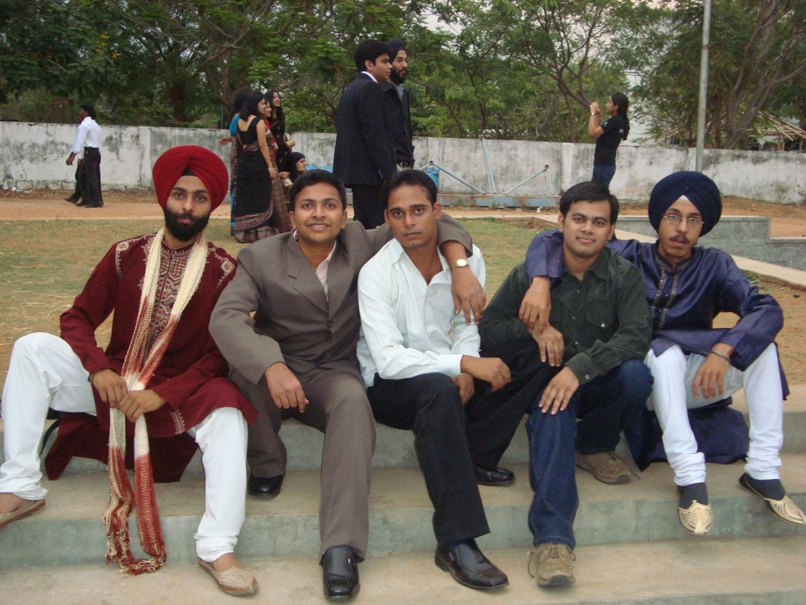
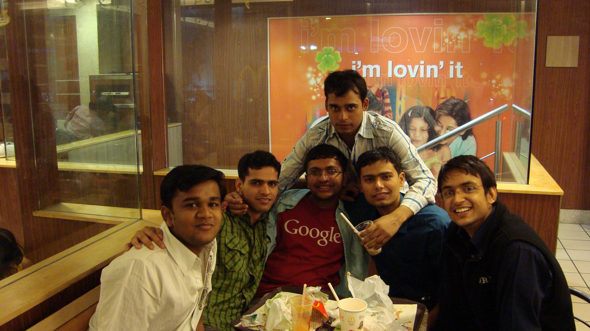

The Yearbook - Commemorating 2005-09!
Ankush Kalkote's profile information
Name - Ankush KalkoteBirthday - 01/01/1987
Email - ankush@students.iiit.ac.in
Address - 78, Parwana Nagar, Purna Road, Nanded
Phone - 9959731035
WishList - driving BMW
What would you want to be remembered as - Maratha warrior, but dont mind with all nicks my friends have kept :P
Testimonials written to Ankush Kalkote
Ankush Kalkote's Album

{kind=link}
Farewell 09

Default caption

{kind=link}
Fun at McD... I'm lovin it :)
Testimonials
For Manish SharmaMux bahot bhola-bhola sa ladka hai
 ...Isko duniyadaari bilkul hi pata nahi hai... Very innocent... he is very friendly and pleasant to be with... Very truthful and genuine by heart
...Isko duniyadaari bilkul hi pata nahi hai... Very innocent... he is very friendly and pleasant to be with... Very truthful and genuine by heart
He is very helpful... Koi bhi kaam bata do naa nahi kahta hai...
Hamare batch me sabse jyada portals banaye hai
 ... Thanks for that Mux and Hats off for Yearbook !!
... Thanks for that Mux and Hats off for Yearbook !!
Ye banda Bahot jaldi excited ho jaata hai... Maine usko bahot baar samajhaya hai- Bhai thoda thanda raha kar... Lekin pata nahi ye control hi nahi kar paata...
Waise BC karte waqt khud pe bhi joke maarta hai... To make other people laugh by making fun of oneself is really praiseworthy

Felicity ke waqt humne saath me baithke puzzles banayi thi Kode Konundrums ke liye... Aur saath me humne Mobile pe project bhi kiya tha... Iske saath me kaam karne me maja aata tha
Facebook ke games ka aur Flash games bond hai... Iske saath Pocket tank khelne me bahot maja aata tha
You are my really good friend
... I will miss you... Keep in touch... Waise aur bahot saari baatein hai likhne ke liye... lekin ab time nahi hai  and Thanks for your lovely treats
and Thanks for your lovely treats
Wish you all the best for your MS... hope you complete it as fast as possible
Song 4 u: Koi kahe kehta rahe kitna bhi humko deewana
Will miss you for: Your friendly, innocent and witty nature
Message 4 u: Be cool and don't lose your temper
For Srirang Ranjalkar
Srirang Ranjalkar....majha ekmev batchmate jyachashi me marathi madhe bolto... mhanun hi testi me marathi madhe lihit aahe... Pehle me ekdam shudh marathi script madhe lihili hoti... pan yearbook support karat nahi tya script la
 ... Chal te me tula orkut var pathaven ... Btw tujhi testi mala khup aavadli
... Chal te me tula orkut var pathaven ... Btw tujhi testi mala khup aavadli 
Sarva jan hyala D.J. Ranga mhantat
 ... Aamchya class madhe khup lokpriya aahe... Purna South indians ani north indians sarva jan hyala olakhtat ... ka nahi olakhnar baba?... Ha ekdam khup friendly aani uber cool banda aahe ....(thoda bahot english vaparava lagat aahe.... kay karu shabdach athavat nahi aahet.)
... Aamchya class madhe khup lokpriya aahe... Purna South indians ani north indians sarva jan hyala olakhtat ... ka nahi olakhnar baba?... Ha ekdam khup friendly aani uber cool banda aahe ....(thoda bahot english vaparava lagat aahe.... kay karu shabdach athavat nahi aahet.)
Antakshari madhe hyala koni haarvu shakat nahi... Ekdam picture chi release date paryant sagale kahi hyala lakshat rahte... Itke kasa kaay koni dhyanat thevu shakato re baba
 .... Bollywood cha ekdam chalta bolta wikipedia aahe
.... Bollywood cha ekdam chalta bolta wikipedia aahe
Aapan jeva 'Eka lagnachi gosht' baghayala gelo hoto tya divashi khup maja aali.... Ekdam maharashtrat asalyasarakha vatat hota tumha sarvan sobat...
Ranga la mi kadhi kashacha tension ghetana pahile nahi... Nehmi ekdam cool asato... Mulivar tar mast impression takto... Bhai aamchya college cha Chocolate Boy jo aahe
Mux la marathi shikvat asatana khup maja yet ase
... Tuzyasobat bolatana mala kharach khup anand vatato... Asach contact madhe raha... ani mala visaru nakos...
Bhaavi ayushyasathi tula khup khup shubhecha!!!
For Alok Kumar Gautam
Part3
Now coming to Alok 2.0 i.e. new Alok in the final semester... Never caring about anything.... Much more coool and relaxed....
Bahot chatiyata rehta hai bandiyon ke saath...Itna flirt karta hai aajkal... Aajkal jab koi chat mujhe padhata hai...Main to hairaan ho jyaata hoon
....Itne shock mat de bhai kahi mujhe heart attack na aa jaaye
He loves bikes... But his knowledge about cars is zero... Alto ko Santro bolta hai, Indica ko WagonR bolta hai...Hadd hai yaar ek car bhi pehchan nahi sakta
 ....Waise usko humne pooch pooch ke finally kuch to sikhaya diya...Hope ab jaldi nahi bhoolega
....Waise usko humne pooch pooch ke finally kuch to sikhaya diya...Hope ab jaldi nahi bhoolega 
Main jab ise hero bolta hoon to bada hi khush ho jaata hai
...I will really miss that smile....
He has great respect for his mother... Unki baat ye kabhi nahi taalta... Your parents must be very proud of you
Wish you all the best for your future.... Ab yaar tu chhodke jaa raha ho to thoda dukh to hoga hi
... Baadme lekin humein bhool mat jaana... Keep in touch!!!
Song for you : Ye dosti hum nahi todenge, Todenge dam magar tera saath na chhodenge
Message 4 u: Be more confident and Have faith in yourself
Will miss u 4: Your helpful nature, Your jokes and PJs and all things about you
For Alok Kumar Gautam
Part2
When I first met him in cellar and when he told me he was from Bihar, I never thought we would become so close friends one day... Alok proved all my misconceptions about Bihari wrong
... Also scar on his face gives him looks of typical Bihari Bhaiyya
But as time progressed I found him very friendly... Meri sabse jyada discussions hoti thi is bande se... Koi bhi topic pe hum discuss karte the.... Personal life, social or political issues and even many philosophical points too
When I used to be worried about my Google result, Alok used to give me confidence.... Your support was always great buddy and I appreciate that
Ye banda waise kabhi kabhi bahot frustoo ho jaata tha...Ladkiyon ke liyo bahot jyada desperate ho jaata tha...
Bahot baar decide karta hai ki gaaliyan nahi dunga...lekin kabhi nahi chhod paaya...Kya kare bhai log sudharne hi nahi dete...
Iske bhaiya ki shaadi me bahot maje kiye hai isne... After coming here when he started getting some flirty SMS and calls, his joy knew no bounds... Banda itna khoosh hoke aaya tha mere paas... Par baad me kat gaya pata chal ki wo bhabhiji thi...

Banda itni saari baatein share karta hai...ki mujhe bhi koi bhi baat batane me aitaraaz nahi lagta...
For Alok Kumar Gautam
Part1:
Alok or I love to call him Alukwa is one of the most helpful and friendly guys in our class.
He is my one of best friends in IIIT. He shares all things with me and I too share things with him. Whenever I get bored, the first thing I do is to go to his room.... Phir kaphi baatein hoti ho aur saara boredom door ho jata hai... Whenever I am in trouble ,I go to him and he is always there to solve my problem. Let the problem be anything from exam or assignment, attendence or any other things, Alok is ready to help you.
He is one of the most tolerant guys I have ever seen in my life. We have teased him for almost three years and still continue it, but he never got angry even after we ruined his chances of potential gf
.
He is always ready to entertain the group even at the cost of his own fun. Making fun while teasing others is easy but making fun of yourself to make others laugh is worthy of praise
. He always sings the song of the year (recently it has became song of the month) whenever he gets chance to sing even if people continue to criticise him for that .
He is very sincere and hard-working guy
... He studies each subject with full dedication... He has been teaching us many subjects in the last four years... and also gives us the assignments to copy ... Thanks for all that
He says he is a public property
as his room is.... He is generally not alone in his room.... He will never say NO to a friend for anything...
Waise ye bahot badaa BC baaz hai.... bas isko kahi pe baithne ko mil jaaye aur bc karne waale log mil jaaaye..... baaki kisi cheez ki jaroorat nahi padegi
Alok is an integral part of our group... Uske bina group adhura sa lagta hai
...I can't imagine our group without him... I will really miss you Alok .For Randeep Singh Banga
Part1
The only word sufficient to describe him is "BANGA" . The PERFECTIONIST of our batch. He really excells at anything he does. He has tremendous belief that one can do everything in life and excell at it. He is genius.... Think of any good qualities... All those you will find in Banga... Very noble hearted... Has great faith in religion... Very firm on morals and ethics... He is devoted to the noble work for the society....
Itna soft speaking banda maine aaj tak nahi dekha... Very calm and composed
....Main to sochta hoon kabhi to thoda gusse me aayega...Gussa to dur ki baat hai...Thodasa aggressive bhi nahi hota!!!
Lekin iska ek faayada hai- Kisi ko bhi pata sakta hai apni baaton se
Waise ye batane ki jaroorat nahi hai ki Banga aajkal college me nahi rehta
. Though I miss you a lottttt (really a lot) in the campus and so the group, I think you are doing the noble work and you enjoy it. If somebody will ask me what is banga's biggest quality? I would say - "Listening to the heart and not caring what others will say".
Padhai likhai me to bhai Banga bahot bada bond hai... Grades se to usko bahot jyada pyaar hai... CGPA aise hi thodi na banati hai phir
... Lekin jab grade kharab aata ho to kaphi dukhi hota hai... Discrete maths me 'B' aane ke kaaran bechara kitne dino tak sadme tha...
Banga ne mujhe bahot subjects padhaye hai... Banda bahot cool tareeke se padhata hai... Saamne wala kitna bhi dumb question pooche Banga har cheez ki bade aaram se aur pyar se samajhata hai... Great patience indeed
Bahot careless attitude hai bande me...Kahi pe bhi koi bhi cheez chhod ke jaata hai...
In first year he was very very innocent... Kabeer used to pull his leg a lot... used to take photo while sleeping... Ye bechara padh bhi nahi paata tha... Raat me kabeer sone ke baad Table lamp laga ke padhta rehta tha...
Iske room mates ne isko bahot tang kiya hai...Baba bhi kuch kam nahi hai... Aur maine bhi unka saath diya hai
...
For Randeep Singh Banga
Part2
Exams ke pehle koi naya banga hi aa jaata hai...Itni tension
...Bhai saab khana bhi nahi khaate... hum us time pe banga se bahot darte hai... Kya haal bana leta hai bhai ... Waise final year me kaphi cool ho gaya hai ... Hope you never take such tension in your life in future
Ek baar first year me banga jawahar ka assignment chhodke ghar gaya tha...Waha se bande ne mail kiya code wo bhi bina koi indentation aur spaces ke bina
 ....Kabeer aur God ke bachche ke josh mein hamesha ghar jaane ki lagi rehti thi.... Zulu sir ne bhi banga ki kaphi liyi hai...Sir usko hamesha bolte hai jab dekho amritsir chale jaate hoo ...
....Kabeer aur God ke bachche ke josh mein hamesha ghar jaane ki lagi rehti thi.... Zulu sir ne bhi banga ki kaphi liyi hai...Sir usko hamesha bolte hai jab dekho amritsir chale jaate hoo ...
Class me iske naam se humne itna chillaya hai...First sem se hi iska naam sabko pata chal gaya
.... Alok ke naam chillane se pehle sab log Banga Banga hi chillate rehte the...
Log isko sirf Banga ke hi naam se jaante hai... Ek baar kuch kaam se isne charan ko phone kiya tha...Banga bolta hai- Main Randeep Singh bol raha hoon...Charan bechara pehchaan hi nahi paaya, wo poocha kaun Randeep.... Banga laga raha- Arey Randeep Singh bol raha hoon...Do teen baar yahi hua phir bhi wo nahi pehchana... Phir finally Banga bola- Arey main BANGA bol raha hoon....Wo turant samajh gaya... LOL

Waise ye bahot busy rehta hai... Jab dekho phone pe kuch kaam pe rehta hai....Bhai bada aadmi ban chuka hai....
Banga is an ideal example of selfless dedicated work....
He has done commendable work for the Placement committee... Also he is doing a great social work....
For Randeep Singh Banga
We have worked together on many projects and in many courses... Banga ke saath rehne ke hamesha fayda hota tha... Waise humne sirf deadlines pe hi kaam kiya hai... Kitna bhi bada kaam ho bas kuch bhi jugaad karke ek din me complete karna hai
... Aur kitne bhi tough subjects ho exam ke ek din pehle hi padhna hota tha... Waise ab hamari saath me bahot saari baatein hai share karne ke liye lekin usko likhta jaayunga to pata nahi aur kitne parts banenge... To ab ruk jaata hoon!!!
Banga is indeed my TRUE FRIEND...
When I had accident the first person I thought to call was Banga... and he came to me asap... In any tough situations he has always helped me...
Banga jaise dost badi kismat se milte hai...I never wanna lose you as my friend...
I am really sorry if I teased you more and crossed lines sometimes... Lekin yaar tune kabhi gussa hi nahi kiya aur kuch bhi nahi kaha to kaise pata chalega...
Wish you a great happy life ahead
May god bless and fulfill all your wishes
Waaheguru ji da khalsa, Waaheguru ji di fateh!
Memories forever: All happy, sad, sweet and sour memories with you are unforgettable
Message for you: Be happy with yourself and value your potential
Song for you : Singh is kingg...Banga is king
PS: Yaar tere itna acha to nahi likh sakta lekin hamari bhavnayon ko samajhna
For Nitin Gupta
Guptha bada hi simple aur cool banda hai... He can move his body like anything... Awesome dancer... A good Cricket and BB player... Banda all rounder hai
... Maine ise kabhi tension me nahi dekha... Jab BTP presentations ke liye hum jaate the tab inki prep huyi ho ya na ho ye kabhi apna cool nature lose nahi karta...
Waise main ab bada testimonial to nahi likh ne wala, time nahi hai yaar...But I really appreciate you as a friend... Wish you all the best for future life and Keep in touch
For Veer Deora
Socha thi ki tera testi ab kya hi likhunga... Tu to abhi aur do-teen saal yahi pe hai
... To hum milte rahenge ...
Bhai isko dikhke lagta hai ki abhi neend se utha hai... Pehle to mujhe lagta tha ki bahot pita hoga... lekin aisa kuch nahi tha... Really very good by heart.... and a cool person
He is proud Rajput... he has got sharp brain which he never wastes in studies
but rather he uses that in trading or business... he gets nice business ideas which he implements with the help of Chacha
Really good football and Cricket player... I don't know about other games but I expect that he must be good in other games too
Hum pehle jyada nahi milte the... But in the final year we came closer and got to know him better... Aur jab bhi mujhse milta hai mujhe vela bolta rehta hai aur hum use chidane ke liye dulla kehte hai
Chal waise apni baatein to hoti rahegi hyderabad me... Wish you all the best for your research work
Cheers!!!
For Harsh
Harsh or as I call him Teddy is intelligent, simple, fun-loving and nice person... He is very good in studies... Nine pointer with six IIM calls and three converted
... He has very good leadership qualities... He is very firm on his ethics and morals
We did the ITWS project together... Though we couldn't achieve what we wanted to, we learnt a lot from it.... It was really fun working with you... We used to lot of BC together...
Whenever we meet... He gives me a broad smile and calls me 'Yankee' then in return I too smile and say 'Teddy'
Wish you all the best for the future... Hope you make a good career in management and achieve whatever you aspire
and Don't forget me.
Best wishes,
Yankee
For Rishi Gupta
Rishi aka Cooldude is one of the most soft speaking persons around
He is very friendly and you will enjoy his company ... He has been part of our group in most of the outings...
He is very good at Maths.... he can explain those concepts very well... Before Linear Programming exam he taught us all those concepts within an hour
He is sincere about his work... He has good academic records.... A very good cricketer
... Loves watching cricket... I have loved to watch several cricket matches with him in NBH and OBH
He is fanboy of bollywood movies and music... Whenever I want to download any new songs I just get that from him... Not a very hard core gamer but now a days enjoys playing CZ and other games
Whatever responsibilty he takes he completes that work dedicatedly.... He has done commendable work in Felicity
Wish you all the best for your career and life... Hope we continue to meet after the college also
For Sanket Sharma
Daddu is among one of the most popular guyz of ug2k5.... Our leader, manager, CEO of our batch
... We are very grateful to find a leader like you...
He is very good at convincing people.... Even our professer was convinced by his abilities and called him Marketing Sharma
... His
Diplomatic answers Will never hurt any person directly... Bhai vote bank ki chinta jo rehti hai
I share the memories of Batar ke "Ghane Jungalon" ki trip with him... First I was skeptical about it bcz it was planned just one day in advance... But Daddu proved me wrong
.... It was really a great trip... Thank you Daddu for that
Hats off for your commendable work in Placement committee and as a CR
Wish you a great career in management ahead
and hope you get BoA letter soon so that you don't need to go to Al'queda For Maruti Borker
Maruti aka Tifosi is a pleasant, very friendly and geek personality... You will never get bored around him... He has really sharp and mischievous mind... Perfect hacker
... He has great command over web technologies, Linux and Computer Vision... Also a great coder
He used to live in Cellar first year... aur workspace me bhi bahot popular tha...lekin pehle bahot kam baatein hoti thi... Our real friendship took shape in Google
...
We share lot of memories during the Google internship.... Enjoying the food and chips there... Making sandwitches... Eating chat... Going to CCD.... Playing Foosball, TT and Snooker.... Playing games on XBox or Wii specially.... Playing Guitar hero
During Foosball matches we used to support each other against Somani
... and if we win then teasing Somani would be an awesome enjoyment .... At all the time teasing Somani was part of the fun package...
He is very dedicated to his work... He doesn't work very hard but works smartly
... He used to find many niche things in the Google and then used to share passionately with us ...
He is Youtube aficianado... Surfs internet a lot....and he shares the best things with us.... Thanks dude for that
Wish you all the best for your career and life
... Keep in touch after going to Bangalore....
Best memories : internship at google
, playing Foosball and Runway9 outing
Will miss u 4 : Your witty nature, friendly attitude
For Ajay Somani
Somani THE Bond Coder of our batch... Isne apna naam to roshan kiya hi hai saath saath college ka naam bhi... We are proud of your achievements
Very hardworking and damn intelligent... ACM ICPC Finalist.... Winner of many coding competitions... C/C++ and Algo GOD... A true Achiever indeed....
He doesn't like to lose at all in anything
... So your joy doubles if you beat him... Be it in coding competiotion or games TT, Foosball or Age....
Loves food and chocolates... The only not so good thing he is never happy with what he has got...
But that's the thing which fuels him to excel at anything....
He is very helpful if the problem is in his favourite domain... Ask him about any algorithm or code to solve any problem, he will be more than happy to help you
Wish you all the best for your future
Best memories : Playing Foosball and TT during Google internship
Message 4 u : Be little sporty
For Akshay Saad
Akshay Saad aka jojo bahot hi ultimate gamer hai....CZ, Age sabka bond hai...Bhai Age me to bahot gandi maar leta hai saam ne waale ki....Sab log bas isi ki team me aana chahte hai... Opposite khelne ki liye koi tayaar nahi hota
...
I have never seen him tensed... Really a very coool guy
... Never cares about studies and grades....
Bahot jyada TV serials aur movies dekhta hai... Coffee shop pe BC me bhi shaamil hota hai... Waise jyada nahi bolta lekin jab lene lagta hai to phir piche nahi aata...
Wish you all the best for the future... Keep in touch
For Abhinav Parashar
Paros is a talented, hard-working, creative, fun-loving and nice to be with person ....He dreams of becoming an entreprenuer... He has worked sincerely towards the projects to make his dream come true....His dedication to his goal is worth praising
.... I wish your dream comes in reality soon....
Waise pehle main Paro ko jyada nahi jaanta tha... Alok ke kaaran hum phir ache dost ban gaye...
. Equitypulse ke waqt kaphi der humne saath me kaam kiya tha...
Isko attendance, assignments ki kaphi chinta lagi rehti hai...Khud nahi jyata lekin mere peeche pada rehta hai- class jaake proxy maar diyo yaar, assignment kar de yaar
Jab iski placement nahi ho rahi thi to kaphi bura lag raha tha...Lekin finally jab iski achi job lag gayi to bahot achcha laga...Iski 'Mehnat rang layi'
Phatton ka baadshaha hai... Jab iska mood hota to bhai kya ek se badhkar ek phatte maarta hai... Aur gandagi ka bhi shahenshaha hai, lekin ab iske chele atul aur alok isse bhi aage nikal gaye hai... Agar mai ab wo kisse sunane lag jaayu to bhai yearbook kharab ho jaayegi
.
Atul, Alok , Paro aur maine Alok ke room pe ya phir coffee shop pe bahot bc maari hai... Placements ke waqt specially
... His knowledge about web technologies is excellent... Whenever we need any help about AJAX, PHP or Javascript we go to Paro and he always helps us with that... Thanks for that yaar ...
Hum to hyderabad me hi rehne waale to milte rehna.... Wish you all the best for your dreams
Best memories : BC in Alok's room.
Song 4 u : Main ramata jogi
Message 4 u: Free ki mile to itni jyada mat pina
For Manish Arora
Arora THE topper of our batch...Bahot jyada phoduuuuu banda hai
...Yet down to earth guy...Well we have not been interacted so much... But I have a great respect for this guy .
We usually call him "JAAT"....Chand ne ispe bada mast gaana banaya hua hai
... Body banane ka bahot shauk hai ise.... Gym jab bhi jaata hai apne muscles dikhata rehta hai ... Haryana ke special hiron me se ek hai ...
When he didn't get internship in Google...I think google has missed this Gem....But I am happy he is in M$ now and he loves it
... Though not as loyal as Adi, he too loves Microsoft....
Aajkal CZ khelne bhi aata hai Novirus banke... Bakchodi karne me bhi ye banda bahot aage hai...Aur phatton me bhi
... Jab bhi koi presentation hoti hai ya koi kaam karna hota hai,to ye banda Adi ke kaphi maje leta rehta hai ... He is well cool and relaxed but when he gets angry better stay away from him...Once I have seen him getting very angry with Ojasvi....
Well, Finally I would like to wish you all the best for your career and life
... Keep in touch
Will miss you 4 : The smile on your face that comes when we see each other
, Your sheer brilliance
For Yogesh Prakash Nautiyal
Nattu bhai bada hi sidha sadha banda hai
...Waise mai ise second year tak nahi jaanta tha...Phir baad me hum AI me project partners ban gaye...Then OBH me aane ke baad kaphi baatein hoti rahi... He is very hard working and sincere person.
He loves to sing Gadhiyali(I m not sure of the spelling) songs and sings them really well
. Isko purane senti gaane bahot pasand hai...
Waise ye kaphi tension leta hai. Placements ke waqt ye to bahot tension leta rehta tha...Phir bhi kaphi baar mai, paro aur alok bc maarte the iske room pe....
Aur phir koi gaana vaana chala dete the....Phir sub mood fresh ho jaata
Coffee shop pe bhi humne kaphi bc maari hai...Isko chacha ke naam se hamesha daraya jaata hai...
. But dont worry dude now is not coming with you...
Hope he finds Nirvana in Airvana...All the best for your future
. Bangalore jaake bhool mat jaana...
For Aditya Agrawal
Adi is very brilliant, smart, cool, geek and urbane guy
. He is very crazy about Rock .... Knows all intricacies about Rock music.... I got to see it in live during Riders of the Storm. He has great general knowledge...
Well we have done some of the toughest courses together- Parallel Algo and Multicore Architecture
. I was lucky to get oppurtunity to work with Manish and Adi team in the fifth semester - for Trimaran. The Adi Manish pair is really cool and I find it similar to me and Banga . Manish Adi ke kaphi maje leta rehta hai kaam ke waqt  .
.
He has worked for Placement Committee with full dedication. We all admire your selfless work for the placements
.
He is very loyal to Microsoft. Among very few people in IIIT who use Internet Explorer and live.com
. Even if he has to use Linux, he goes for Suse... Supports MS in every argument against it.... Don't ever dare to say anything bad about M$ in front of him .
Waise ye bada aalasi banda hai
... Exam me bhi likhne ka aalas aata hai ise... Question ka answer aate huye bhi likhke nahi aata... Great yaar
Wish you all the best for your career and life
... Keep in touch.For Ojasvi Rajpal
Ojas is one of the best gamers of IIIT
.He has played almost all games that are available here. You take name of any game - wow, fear, battlefield, ceaser, gta, nfs, age, cz, tekken, Call of duty, Unreal Tournament....he has played them all and he is really good at them. He hasn't even left any flash games unplayed.
Aur aisa nahi hai ki bas games hi khelta raha...Acads me bhi piche nahi hai...Microsoft ki dream offer hai bande ke paas
... Bahot intelligent hai... Has got really sharp mind... One of the best brains around
Jab main isse pehli baar mila tha tab meri isse banati nahi thi...Bahot jyada irritate karta tha
. Pehle to GHEB me rehta tha lekin most of the time cellar me bc karne aa jata tha. Baad me phir nbh me shift ho gaya aur phir to hum neighbours ban gaye. Waise banda nature se bahot acha hai ...he is innocent and childish ...Bachowali harkate bahot jyada karta hai... Bahot senti hota hai... Has great interest in philosophy and physics
Ab iski unique quality - Kaphi jyada high level ke phatte maarta hai
...kabhi kabhi itna scientific ho jyada hai unme bhi...aur phir explain bhi karta hai...
Lekin isse sabsi badi shikaayat ye hai - Har semester mein ek subject mein to 'Fakka' aayega isliye hamesha rota hai...Aur generally aise subjects me iska 'A' ya 'A-' aa jaata hai....Abhi is sem me bhi bol raha ki Venki ki project 'F' aayega
...Mai hasoon ya royun samajh me nahi aata ...Koi aise kaise ro sakte hai yaar... Aise waqt pe isko sirf iska room partner hi sambhal sakta hai - Chacha ... Inki jodi to bhai legendary thi
Waise sab log isse sambhal ke rehte hai...Kya bharwasa bhai... Isse jab josh chadhta to apni strength prove karne ke liye koi banda chahiye... Ab ojasvi se kaun ladhega (Paagal hai kya koi
)... Aur iske saamne koi cheez padi mil jaaye, phir uska koi bharwasa nahi . Mostly tod dega ya kharab kar dega...Hamein kaphi sambhal ke rehna padta hai iske saamne
For Ojasvi Rajpal
Part II
Waise to ye humse baat karta hai to normal hi rehta hai...lekin jab kisi prof se baat karta hai to phir wo kisi ko samajh me nahi aati
... Bechare profs ko badi mehnat karni padti hai samajhne ke liye ... Aur ye aur mridul jab mil jaaye phir to bhai kya accent hoti hai inki... Kisi ko pata bhi nahi chalega ki English bol rahe hai . But the good thing about him is - Kabhi bura nahi maanta kitna bhi majaak udayo tabhi bhi ...
Isko raaste koi bhi yaad nahi rehte... Agar isko Mehdipattanam akela chhod do to ye IIIT bhi waapas nahi aa sakta...
He does some crazy things.....Dilbert comics ki 800 strips ek din me padhi hai is bande ne
 ...Isko cartoons aur animated series me bahot interest hai... Aur phir un heroes ki acting karta rahega dinbhar... And he is very pround and happy about that...
...Isko cartoons aur animated series me bahot interest hai... Aur phir un heroes ki acting karta rahega dinbhar... And he is very pround and happy about that...
He is obsessive about body building and exercise... His inspiration is Rocky...
Waise aaj kal hamare group ke saath jyada nahi rehta is liye hum isko Alien kehke chidate hai... Lekin ab isko Alien keh do to khush ho jaata hai
Wish you all the best for your future, yaar
. Lekin humein mat bhool jaana bhai kuch saalo ke baad.... Atleast testi padhke to yaad aa jayega ki- mai tera dost hoon
Will miss you 4 : Your childish nature, games
Character I relate to u : Sheldon from TBBT
For Sambhav Jain
Mr GEN is a real GEM of our batch...Smart, intelligent, friendly, helpful and fun-loving
...He has an artistic mind... Makes nice posters, designs for anything we require... We always go to him first if we have to do anything with Photoshop...
He has major participation in the cultural events from Aakash house... He is a good singer and good at dramatics....He has successfully organized many events...Also played a major role in organizing Felicity'08
He is sincere about his research work and good at studies...One of few guyz class who have class participation...He is nine-pointer....Pehle mujhe yakin hi nahi hua, kyunki bahot kam padhta hai...Phir bhi grades mast laata hai
His selfless dedication for the placement comittee is really admirable
....Hats off to u for all the efforts you have put for the placements ...He has really worked hard for almost three-four months...We all are lucky to have you in the placement committee
Popularly known as tinka, kyunki iska kabhi pata nahi rehta ki kab ud jayega..Kahi ladki dikhte hi Tinka gayab ho jaata hai
...Hamesha ye ache se tayar wayar hoke rehte hai, ladkiyon impression maarne ke liye . Lekin ek baat to sach hai, Iski image hamare group me sabse achchi hogi ladkiyon mein
yaar lekin ab Chennai ja raha hai
...Will miss you a lot... Hope you get admission to one of the best US universities for MS.... Have a great career in research .
Song 4 u: Tinka Tinka...
Will miss u 4: Your friendly and helpful nature
For Kabeer Singh
The sportsperson of Aakash and uh2k5....Very good at Football and Basketball
... Very passionate about sports with lot of zeal and energy
When it comes to academics, he doesn't like to study at all....Very lazy about work, assignments and programming....Lekin exams ke pehle kaphi padh leta hai par batane se sharmata hai
... He feels very uncomfortable if some one finds him studying
I used to go to his room many times to play games... Max Payne, NFS... By jove games awesome khelta hai ye banda
....Apart from being in the cellar, We were neighbours in the classroom...Workspace me PC bhi share karte the...
He is obsessive with technology
...He is fond of finding softwares and applications for mobile or Laptop so that he can impress others with technology geekiness and especially tease Banga...Iska room partner jo tha bechara .... Usko tang karna aur cheedana hamara favourite time pass tha first sem me... Bechara banga padh bhi nahi pata tha kyunki ye banda uski aisi aisi photo leta aur phir sabki mail karta ... Delhiwala hai thoda style to maarega hi
Wish you all the best for your future life...Hope you make successful career in the management
Best memories with u: Playing NFS, Teasing Banga....
Will miss u 4: Passion for the games and sports...
For Deepak Vig
Viglu is really a pleasant personality...Hard-working, talented, benevolent, enthusiastic and always happy
...He will always be around friends...Apne chote chote comments hamesha deta rehta hai .Lekin chacha se thoda darta hai uske saamne jyada nahi bol pata .
Never cares about studies...Class me to hamesha novels padhta rehta hai....He does whatever he loves to do
....
Very enthusiastic about learning new technologies and programming languages...and really good at that....He does the projects sincerely... Whatever work he takes, he completes it whole heartedly...Par BTP mein bahot ganda kaata tha enhone
....Felicity me lekin isne bahot kaam kiya tha.... He has played a major role in making technical part of felicity successful....
Vigla's room was the kitchen of the cellar
... He loves food....You will always find something at Vigla's room if u r hungry...Many times we used to make maggie in his room....used to make Sandwitches in the night....Thanks for that buddy Even u wake him up at any time in night during his sleep , he will never say a word to u... Extreme tolerence yaar
Ladkiyon ke liye kuch bhi kar sakta hai...Kaphi frustoo hai. Aaj kal kaphi testimonials likhi hai bande ne....Ek baar first year mein usko ladki ke naam se kaphi sms kiye the....Bechara phas gaya tha hamare jaal mein
Jyada games nahi khelta....Par kabhi kabhi Cracker banake CZ mein aata tha.... Downloading ka kaphi shauk hai....
I have never seen him angry except one time in Bastar while playing cards....Daddu was really frightened at that time.
loves trips and adventure.... Pure B.Tech mein sabse jyada trips mein gaya hoga ye shayad.... Masti maarne ke liye hamesha tayaar rehta hai
.... Bastar ki trip mein bahot maje aaye the yaar
He faces adverse times without being disappointed....Never loses hope and work towards achieving the goal...Hope u achieve great success in your life with this attitude
For Deepak Vig
Will miss u 4 : Why should I miss you....We will still be together
Song 4 u : Pyaar hua ekraar hua
Best memories : Trip to Bastar, Going to walk after dinner in Yuktahaar, then bc at cs
Wish 4 u : Wish u get the admission in one of the top universities in the world for MBA and become a successful entrprenuer
For Kulbir Saini
Chacha is one of the greatest bonds of our class. He is damn good at Web technologies, Linux and all geeky stuff
....We did not talk much in the first year...But we came close in the second year when he became my neighbour in cellar. 
Chacha ka favourite kaam hai- kisi ki bhi maarna
... Koi bhi mauka nahi chhodta kisi ki maarne ka... Aur second favourite Coffee shop jaana... Isne pure B.Tech mein jitne der classes lagayi hogi usse jyada CS pe time bitaya hai ... BC maarne bhi ye banda kabhi piche nahi rehta.... Bahot bada nautanki hai...
The best thing about him is he never cares about anything and he does only thing which he enjoys doing. I feel he is one of the greatest achievers of our batch...Google Summer of code, Video cache, working with some of the greatest developers of Open Source, Various offers from startups, Airvana and Rediff......And the list of achievements is never ending
...I wish it never ends and you add many more achievements to your list .
I feel honoured when he used to tell me about the things he is working, his plans (Which he seldomly discloses to others
)... We used to discuss lot of techie ideas in Yuktahaar..... Page rank hacks..... Isne to baba ko bhi frustoo kar diya tha ..... Then he gets many ideas about starting business...
He is passionate blogger as well.....Never misses a chance to write a blog on any event ( Page rank jo badhani hai
).... He never cares about studies and grades.... He becomes happy even with 'D' ... Aur jab bhi iska room partner rota tha ki uska 'F' aayega...Chacha uske itne maje leta aur confirm kara deta ki pakka tera 'F' aayega ...Waise inki jodi sabse great thi...."Ojasvi and Chacha".... Bhai kaise nikale honge woh do saal ojasvi ne aur chacha ne ek dusare ke saath...
For Kulbir Saini
Part2
In third sem he got Windows on his system....Uske baad bhai kya games kheli bande ne...aur har baar exam ke pehle koi nayi game install karta tha...taaki baaki log bhi na padhe....Relative grading jo hai
... Aur phir downloading ka josh chadh gaya tha chacha ko....
He loves music...Always plays Punjabi or Haryanvi songs in the loudest volume on his speaker. Laptop ki ya computer ki koi bhi problem ho log sabse pehle chacha ke paas jaate hai...
Chacha ka famous statement hai - "Apni ijjat apane haat". Wo statement chachane apne darwaje pe likha tha.....
Google ko dubana iska sapna hai....Par bhagwan ye teri wish kabhi puri na kare....Nahi to humara kya hoga!
Waise tu Hyderabad me hi rahega to milte rahenge....
Best Memories : Technical and Business discussions with you...Ek baar to khudki OS likhne ka plan tha
, Playing NFS, CZ, Battlefield and Pacman in your room
Song 4 u : Pyaar kiya to darna kya
Will miss u 4 : Your witty nature...Logon ki maarna aur gaaliyan dena
Wish 4 u : May all your websites get high page rank
For Sachin
First of all hats off to you for the testimonials you have written for all our friends
. How do you remember all the best moments we have spent with the friends? Hamare liye bhi kuch chhodta bhai likhne ke liye
My roomie.... When I first met him I found him very innocent, sincere and calm person.... But dont go by his innocent looking face as the Looks can be deceptive
.....He is very active member of the BC group... Never misses any chance of BC....Loves outings and trips... Fun loving guy with whom you can always be comfortable....
He is very good at Basketball
...Ultimate gamer....In first year we used to play a lot of games, All night Age of Empires in workspace in first yr.... then CZ at lab....Bond of the flash games...Playing flash games or Pacman was our favourite way to kill time before exam ...Ultimate database of movies and songs....A real All-rounder....Bhai Kohinoor hai...
He has amazing multi processing capabilities. He can code Jawahar's assignment while watching Movie or FRIENDS
. The scene on his laptop at that moment is awesome.
Lekin ye banda bahot jyada aalasi hai....mere se bhi jyada
. Our room was the most sleeping room....Most of the time either one of us or both would be sleeping. ... The time when we completed our PT in second year was amazing... He used to watch FRIENDs all night and wake me up for the PT in the morning...Without him I wouldn't able to complete my PT
He is movie freak. He has an artistic mind while judging movies. So an advice for normal people dont go to a movie on his recommendation. We repented it many times....
.
The outings would have been incomplete without him. His abcence in any party or outing is always noticeable...
For Sachin
Part2
He is very confident person. I remember, in difficult placement times he used to say - "I will get placed in company like CapitalIq" and he got placed on that same day when CapitalIq came.
Even before examas, if he has not read anything he will not worry. Before IT and Society end sem he had not studied, When we had only two hours to prepare, he slept for one hour. He would have slept more if I had not woken him up.
Now coming to his funny part- Iski kuch pics to ekdam award layak hai...Thanks to chacha for dedicating one website for this pic - http://pixomatix.com ... For those who dont know its Pic on Pankaj's B'day n sachin crying for cake
. Its really worth .... Hope chacha ye picture change nahi karenge (abhi 4-5 mahino me to nahi kiyi.... so i am confident he will not... )
Waise ye ladkiyon ko jyada bhaav nahi deta.... kaphi iske peeche padi hai lekin hamara bond unse peecha chhodata rahta hain
.
I m feeling lucky
that you were my room partner. Will miss you very much. Dont forget me after going to Bangalore. Best wishes for your future.
Most memorable moment: The night we roamed in Hyderabad on bikes after watching a movie
Will miss u 4: Smile on ur face, BC , lazy attitude and for all flash games we played together
Song 4 u: Hum to bhai jaise hai waise rahenge
Message 4 u: Never loose your cool nature
For Pankaj Saini
Part2
When I first met him, my first impression was he was very sincere guy. He used to talk about how much he used to study about JEE, His success in National Olympiads, NTSE.... But whoooosh....Dheere dheere usne apne patte fenkne shuru kiye......
We used to go to buy books on the first day of every semester. As if it was a competition to buy the books before all.... and then that was the only day in whole semester he loved those books
. Ek baar to utni saari kitaabe leke hum zoo dekhne chale gaye the...
I still remember how we used to do C programming assignments.... One time on the last day of assignment we were so frustrated and we left almost 50% of the work undone and watched three movies.
We used to go out so many times searching for laptop and all those outings were memorable. Especially the one in which we went to Universal, CCD, Pizza Hut on same day. we talked about so many things that time... n we became close friends...
He bought the first laptop in the cellar before ITWS end-sem exam... Then new era at the cellar started.... Chatting, Social networking on hi5, Orkut....Watching movies... Playing games.... Very few people might be knowing... He also loves to play Age of Empires... We used to go to UG4 lab... Arrange PCs and Play Age
You may think he is never serious at studies.... But i know how seriously he used to prepare for CAT.... He is damn intelligent... But just by bad luck he lost chance at IIMs even after scoring very high. Dont worry dude you deserve better than IIMs.
Loves to do BC and outings.... and never misses chance irritating and pulling legs of his room partner....
We will always be friends. Thanks for being such an awesome friend.... Will miss you very much
Most Memorable Event: CCD and Pizza hut outing... and movies watched in Akansh Bhaiya's room
Character I relate to you: Barney Stinson of Himym
Message for you: Be careful when you are excited
Will miss you for: Your passion and adventure
For Pankaj Saini
The most energetic and passionate boy of our batch...Known as 'God ka bachcha'... He pours energy in the group even after the night out... I have never seen him dull....Really an Uber cooool personality
He is an amazing story teller.... Great imagination.... Mirch masale bina koi baat nahi bata sakata.... Once he told a story in the group and I couldn't believe when he told me you was also there when it happened
..... Saini has his version of story that will be dramatically different from others... But then what is fun in the life without some spices
He dreams of becoming Movie director or story writer. Bollywood awaits you dude! They really need talent like yours
He has tons of girlfriends. So many girls are crazzzzy about him. Really great at doing magic on girls
... But never tells how he does that
Apart from gals he is very crazy about bikes and Cars.... I loved to talk with this guys about BMWs, Merc, Toyota, Honda, Scorpio, Safari for long time and never get bored. Hope you buy Corolla Altis soon ....
First year we watched Matrix, LOTR series on Akansh Bhaiyya's room. He can watch these movies infinite number of times. He has by hearted all the dialogs of Matrix. And while watching movie he dips in the imagination world (in the character of Neo). His passion or spark while watching these movies is amazing. His email id- matrix_trap accentuates this fact...
Every time I want to see some movie or start watching new TV series or read a novel, I used to go to him and take his suggestion. Whenever I watched any TV episodes of GG, Himym, tbbt, the OC or movies with this guy, I loved them more....
Last but not least - this guy is LEGEN (wait for it)................. DARY!!!
For Atul Dwivedi
Atul's testi in his own style....
Bhai Guitar bajata hai, Californicashion
gaata hai, Dholak bajata hai, Khudka rock band hai, Basketball khelta hai, Code bhi karta hai, Entreprenuer hai, CapitalIq me job karta hai, 10 logon ko entertain kar sakta hai, Creative hai, ladkiyaan bhi hai peeche phir bhi bandaa Down to earth hai....
Really this guy's aura will make you feel inferior, Such an all round performer! His progress from Reewa (dont know spelling
) to Californicashion n CapitalIQ is stupendous . You will never get bored in his company, very creative and very good in making jokes except few PJs...The experience of bc with Atul is always FUN at its extreme. Though I came close to him only in final year...I will miss him very much!
All the very best for your future life.